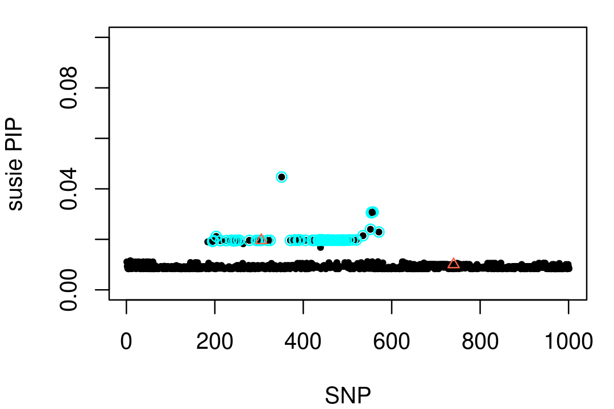
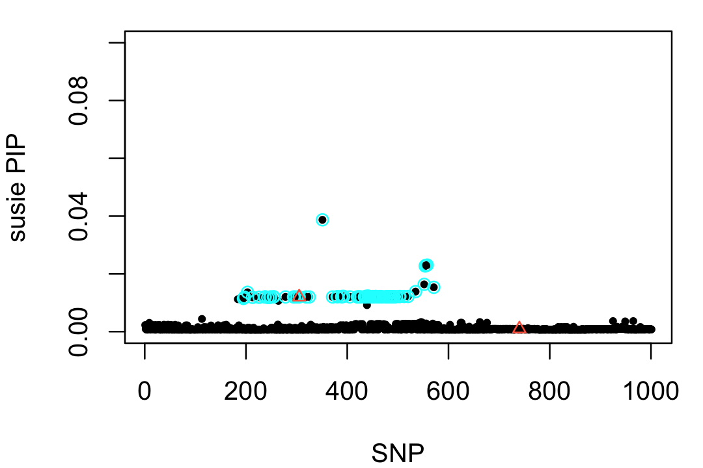

Last updated: 2022-06-09
Checks: 7 0
Knit directory: finemap/analysis/
This reproducible R Markdown analysis was created with workflowr (version 1.7.0). The Checks tab describes the reproducibility checks that were applied when the results were created. The Past versions tab lists the development history.
Great! Since the R Markdown file has been committed to the Git repository, you know the exact version of the code that produced these results.
Great job! The global environment was empty. Objects defined in the global environment can affect the analysis in your R Markdown file in unknown ways. For reproduciblity it’s best to always run the code in an empty environment.
The command set.seed(1) was run prior to running the
code in the R Markdown file. Setting a seed ensures that any results
that rely on randomness, e.g. subsampling or permutations, are
reproducible.
Great job! Recording the operating system, R version, and package versions is critical for reproducibility.
Nice! There were no cached chunks for this analysis, so you can be confident that you successfully produced the results during this run.
Great job! Using relative paths to the files within your workflowr project makes it easier to run your code on other machines.
Great! You are using Git for version control. Tracking code development and connecting the code version to the results is critical for reproducibility.
The results in this page were generated with repository version 9dc1f67. See the Past versions tab to see a history of the changes made to the R Markdown and HTML files.
Note that you need to be careful to ensure that all relevant files for
the analysis have been committed to Git prior to generating the results
(you can use wflow_publish or
wflow_git_commit). workflowr only checks the R Markdown
file, but you know if there are other scripts or data files that it
depends on. Below is the status of the Git repository when the results
were generated:
working directory clean
Note that any generated files, e.g. HTML, png, CSS, etc., are not included in this status report because it is ok for generated content to have uncommitted changes.
These are the previous versions of the repository in which changes were
made to the R Markdown (analysis/large_effect.Rmd) and HTML
(docs/large_effect.html) files. If you’ve configured a
remote Git repository (see ?wflow_git_remote), click on the
hyperlinks in the table below to view the files as they were in that
past version.
| File | Version | Author | Date | Message |
|---|---|---|---|---|
| Rmd | 9dc1f67 | Peter Carbonetto | 2022-06-09 | workflowr::wflow_publish("large_effect.Rmd", verbose = TRUE) |
| html | 37627a7 | Peter Carbonetto | 2022-06-09 | Added susie-rss fit using out-of-sample LD. |
| Rmd | 2c327c8 | Peter Carbonetto | 2022-06-09 | workflowr::wflow_publish("large_effect.Rmd", verbose = TRUE) |
| Rmd | 7af3892 | Peter Carbonetto | 2022-06-08 | Working on large_effect demo. |
| html | cd367c3 | Peter Carbonetto | 2022-06-08 | Added step to run susie with in-sample ld matrix. |
| Rmd | 1f607ce | Peter Carbonetto | 2022-06-08 | workflowr::wflow_publish("large_effect.Rmd") |
| Rmd | f3b3f26 | Peter Carbonetto | 2022-06-08 | More improvements to large_effect demo. |
| Rmd | ba1823b | Peter Carbonetto | 2022-06-08 | Working on large_effect demo. |
| html | ba1823b | Peter Carbonetto | 2022-06-08 | Working on large_effect demo. |
| html | e68ebf0 | Peter Carbonetto | 2022-06-07 | Build site. |
| Rmd | 5ba80d9 | Peter Carbonetto | 2022-06-07 | Small edit. |
| html | 5737016 | Peter Carbonetto | 2022-06-07 | First build of large_effect analysis. |
| Rmd | 4b1ca7f | Peter Carbonetto | 2022-06-07 | workflowr::wflow_publish("large_effect.Rmd") |
| Rmd | eae747f | Peter Carbonetto | 2022-06-07 | Revised workflowr files. |
In this small example drawn from our simulations, we show that that FINEMAP works well with an “in-sample LD” matrix—that is, a correlation matrix that was estimated using the same sample that was used to compute the single-SNP association statistics—but, can perform surprisingly poorly with an “out-of-sample” LD matrix. We have observed that this degradation in performance only occurs in rare cases—specifically, these are caases when the effects of the causal SNPs are very large (i.e., when individual causal SNPs explain a large fraction of the total variance in the phenotype). In this example, the phenotypes were simulated from a linear regression model with large coefficients for the causal SNPs.
We also run SuSiE on the same data. Unlike FINEMAP, SuSiE performs similarly well in this example with either the in-sample and out-of-sample LD matrix.
First, we load some packages used in the code below, and set the seed for reproducibility.
library(data.table)
library(susieR)
set.seed(1)Load the summary data: the least-squares effect estimates \(\hat{\beta}_i\) and their standard errors \(\hat{s}_i\) for each SNP \(i\). Here we also compute the z-scores since SuSiE accepts the z-scores as input.
dat1 <- readRDS("../data/small_data_11.rds")
dat3 <- readRDS("../data/small_data_11_sim_gaussian_pve_n_8_get_sumstats_n_1.rds")
maf <- dat1$maf$in_sample
bhat <- dat3$sumstats$bhat
shat <- dat3$sumstats$shat
z <- bhat/shatIn this simulation, two of the SNPs have a nonzero effect on the phenotype:
dat2 <- readRDS("../data/small_data_11_sim_gaussian_pve_n_8.rds")
b <- drop(dat2$meta$true_coef)
vars <- which(b != 0)
vars
# [1] 305 740We begin by running SuSiE with the “in-sample” LD estimate.
ldinfile <- "../data/small_data_11_sim_gaussian_pve_n_8_get_sumstats_n_1.ld_sample_n_file.in_n.ld.gz"
Rin <- as.matrix(fread(ldinfile))
fit1 <- susie_rss(z,Rin,n = 800,min_abs_corr = 0.1,refine = FALSE,
verbose = TRUE)
# HINT: If the in-sample LD matrix is available, we recommend calling susie_rss with the in-sample LD matrix, and setting estimate_residual_variance = TRUE
# [1] "objective:-1022.11016014083"
# [1] "objective:-1022.09485818675"
# [1] "objective:-1022.08938881293"
# [1] "objective:-1022.08631623612"
# [1] "objective:-1022.08453069749"
# [1] "objective:-1022.08341717597"
# [1] "objective:-1022.08267674806"(We will get a recommendation to estimate the residual variance, but to maintain consistency with the analysis below using an out-of-sample LD estimate, we ignore this advice.)
SuSiE returns a single credible set (CS) containing a large number of strongly correlated SNPs, and one of the SNPs in this CS is a (true) causal SNP.
print(fit1$sets[c("cs","purity")])
# $cs
# $cs$L1
# [1] 195 197 203 213 226 237 238 243 247 248 249 254 255 278 294 296 301 305 319
# [20] 325 351 371 380 381 389 390 393 405 420 421 422 424 427 434 435 436 437 438
# [39] 441 442 443 445 448 450 452 454 456 459 462 464 466 467 468 473 477 478 479
# [58] 483 484 485 486 487 488 489 490 492 493 497 503 504 512 520 535 552 554 555
# [77] 558 571
#
#
# $purity
# min.abs.corr mean.abs.corr median.abs.corr
# L1 0.9827454 0.9993761 0.9999995Here’s a visualization of this result. (In this plot, the CS is depicted by the light blue circles, and the two causal SNPs are drawn as red triangles.)
cs1 <- fit1$sets$cs$L1
par(mar = c(4,4,1,1))
plot(1:1001,fit1$pip,pch = 20,cex = 0.8,ylim = c(0,0.1),
xlab = "SNP",ylab = "susie PIP")
points(cs1,fit1$pip[cs1],pch = 1,cex = 1,col = "cyan")
points(vars,fit1$pip[vars],pch = 2,cex = 0.8,col = "tomato")
| Version | Author | Date |
|---|---|---|
| 37627a7 | Peter Carbonetto | 2022-06-09 |
Now let’s try running FINEMAP on these same data:
p <- length(b)
dat <- data.frame(rsid = 1:p,
chromosome = rep(1,p),
position = rep(1,p),
allele1 = rep("A",p),
allele2 = rep("C",p),
maf = round(maf,digits = 6),
beta = round(bhat,digits = 6),
se = round(shat,digits = 6))
write.table(dat,"sim1.z",quote = FALSE,col.names = TRUE,row.names = FALSE)
system(paste("./finemap_v1.4.1_x86_64 --sss --log --in-files sim1.master",
"--n-causal-snps 5"))Add text here.
ldoutfile <- "../data/small_data_11.ld_refout_file.refout.ld.gz"
Rout <- as.matrix(fread(ldoutfile))
fit2 <- susie_rss(z,Rout,n = 800,min_abs_corr = 0.1,refine = FALSE,
verbose = TRUE)
# HINT: If the in-sample LD matrix is available, we recommend calling susie_rss with the in-sample LD matrix, and setting estimate_residual_variance = TRUE
# [1] "objective:-1022.15334027678"
# [1] "objective:-1022.1533319747"As above, SuSiE returns a single CS containing one of the two causal SNPs:
print(fit2$sets[c("cs","purity")])
# $cs
# $cs$L1
# [1] 195 197 203 213 226 237 238 243 247 248 249 254 255 278 294 296 301 305 319
# [20] 325 351 371 380 381 389 390 393 405 420 421 422 424 427 434 435 436 437 438
# [39] 441 442 443 445 448 450 452 454 456 459 462 464 466 467 468 473 477 478 479
# [58] 483 484 485 486 487 488 489 490 492 493 497 503 504 512 520 535 552 554 555
# [77] 558 571
#
#
# $purity
# min.abs.corr mean.abs.corr median.abs.corr
# L1 0.9759149 0.9986827 0.999996Here is a visualization of this result:
cs1 <- fit2$sets$cs$L1
par(mar = c(4,4,1,1))
plot(1:1001,fit2$pip,pch = 20,cex = 0.8,ylim = c(0,0.1),
xlab = "SNP",ylab = "susie PIP")
points(cs1,fit2$pip[cs1],pch = 1,cex = 1,col = "cyan")
points(vars,fit2$pip[vars],pch = 2,cex = 0.8,col = "tomato")
| Version | Author | Date |
|---|---|---|
| 37627a7 | Peter Carbonetto | 2022-06-09 |
sessionInfo()
# R version 3.6.2 (2019-12-12)
# Platform: x86_64-apple-darwin15.6.0 (64-bit)
# Running under: macOS Catalina 10.15.7
#
# Matrix products: default
# BLAS: /Library/Frameworks/R.framework/Versions/3.6/Resources/lib/libRblas.0.dylib
# LAPACK: /Library/Frameworks/R.framework/Versions/3.6/Resources/lib/libRlapack.dylib
#
# locale:
# [1] en_US.UTF-8/en_US.UTF-8/en_US.UTF-8/C/en_US.UTF-8/en_US.UTF-8
#
# attached base packages:
# [1] stats graphics grDevices utils datasets methods base
#
# other attached packages:
# [1] susieR_0.12.07 data.table_1.12.8
#
# loaded via a namespace (and not attached):
# [1] tidyselect_1.1.1 xfun_0.29 bslib_0.3.1 purrr_0.3.4
# [5] lattice_0.20-38 colorspace_1.4-1 vctrs_0.3.8 generics_0.0.2
# [9] htmltools_0.5.2 yaml_2.2.0 utf8_1.1.4 rlang_0.4.11
# [13] R.oo_1.24.0 mixsqp_0.3-46 jquerylib_0.1.4 later_1.0.0
# [17] pillar_1.6.2 R.utils_2.11.0 glue_1.4.2 DBI_1.1.0
# [21] RcppZiggurat_0.1.5 plyr_1.8.5 matrixStats_0.61.0 lifecycle_1.0.0
# [25] stringr_1.4.0 munsell_0.5.0 gtable_0.3.0 workflowr_1.7.0
# [29] R.methodsS3_1.8.1 evaluate_0.14 knitr_1.37 fastmap_1.1.0
# [33] httpuv_1.5.2 parallel_3.6.2 irlba_2.3.3 fansi_0.4.0
# [37] highr_0.8 Rfast_2.0.3 Rcpp_1.0.7 promises_1.1.0
# [41] backports_1.1.5 scales_1.1.0 jsonlite_1.7.2 fs_1.5.2
# [45] ggplot2_3.3.5 digest_0.6.23 stringi_1.4.3 dplyr_1.0.7
# [49] rprojroot_1.3-2 grid_3.6.2 tools_3.6.2 magrittr_2.0.1
# [53] sass_0.4.0 tibble_3.1.3 crayon_1.4.1 whisker_0.4
# [57] pkgconfig_2.0.3 ellipsis_0.3.2 Matrix_1.2-18 assertthat_0.2.1
# [61] rmarkdown_2.11 reshape_0.8.8 R6_2.4.1 git2r_0.29.0
# [65] compiler_3.6.2